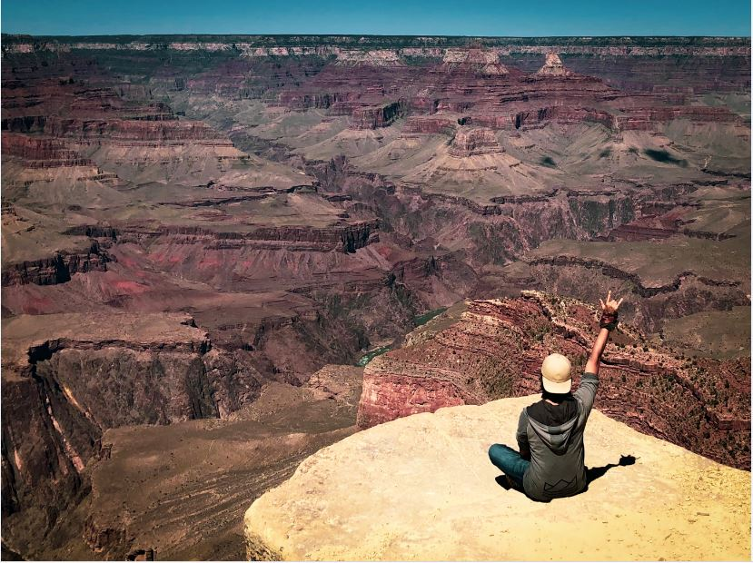

As a member of the Argus tribe, an ancient tribe with long history derived from the Greek
Golden Ages, I might sound idiosyncratic.
Compared to my fellows, most of who admire the elegant lifestyle of the old time, I prefer to look
up at the sky and dream of the future.

About Me
About Argus Tribe
In the major branch of Greek mythology, Argus, or Argos Panoptes is a many-eyed giant. In fact, we were servants of Hera, the wife of Zeus. And we served our Godness with a gift of wakeful alertness, which makes us the perfect guardians. So we have different names like watchers or angels in the many works of literature. Some of our stories lead to a game named Assassin's Creed

After Ragnarök , the events in
which ancient gods ascended to their thrones in constellations in the sky, we live with humans
and
help their civilization in many forms. Our ancestors planted the apple tree beneath which
Sir Newton established the
foundation of
classical mechanics. Also, they patronized many
Renaissance artists, like Piero da
Vinci, Michelangelo,and Raffaello . Our whisper gave Albert
Einstein a
clue to think of the formula of E = mc2, which lead to
the revolution of energy.
If your want to know more about our Argus Community , please visit our home page ArgusHome.